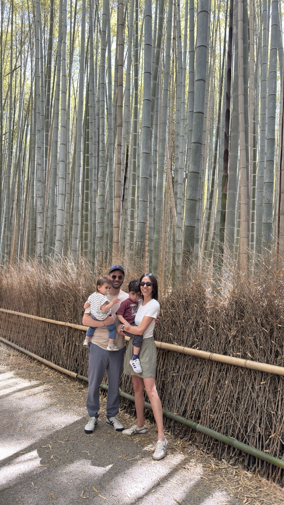
קיוטו · יער הבמבוק באראשיאמה
מדריך דיגיטלי שנכתב מתוך טיול של 21 יום, 11 יעדים ושני ילדים קטנים - עם המסלול, הלינה, המעברים, הטיפים ומה שבאמת עבד לנו בדרך.
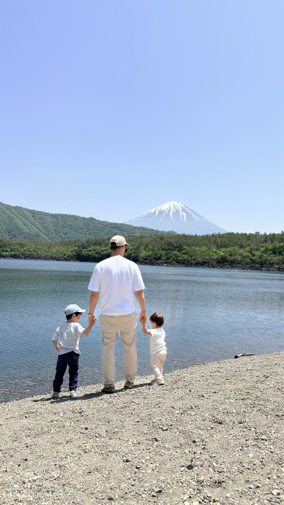
מסלול, רכבות, מלונות, הזמנות, מפות, ילדים, מזוודות - ויש המון מידע, אבל לא תמיד ברור איך הכל מתחבר לטיול אחד שעובד.
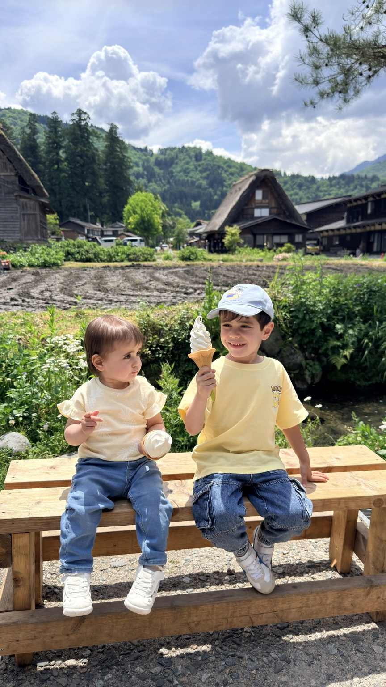
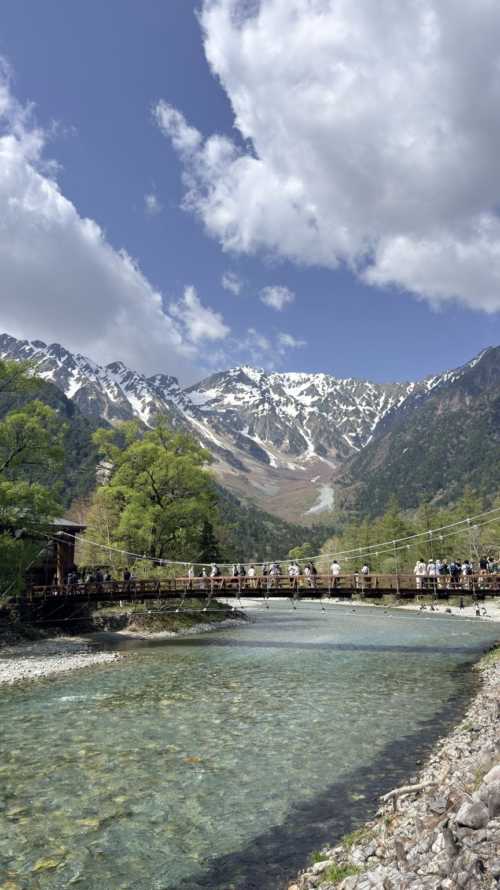
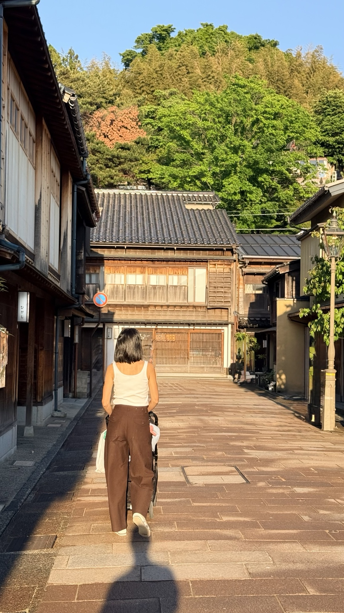
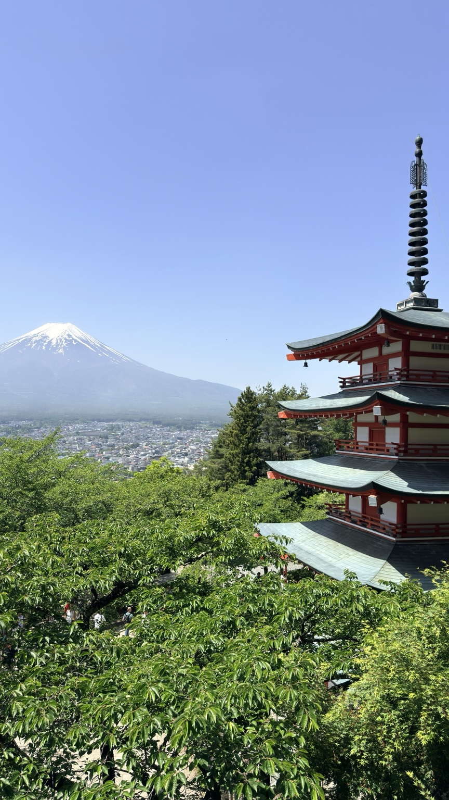
המדריך נבנה קודם כל מתוך טיול משפחתי עם שני ילדים קטנים, ולכן הוא שימושי במיוחד למשפחות. אבל הוא לא מדריך לילדים בלבד. זוגות ומטיילים עצמאיים שעוברים ביעדים שבמדריך יכולים להשתמש בו כרפרנס נוח לבניית המסלול שלהם.
דגש על קצב, עגלה ומנשא, נגישות, מעברים, לינה והפרטים הקטנים שמשפיעים על יום טיול משפחתי.
במקום להתחיל מעשרות מקורות שונים, מקבלים מסלול אמיתי שכבר נחקר ונבדק ויכול לשמש בסיס טוב לתחילת התכנון.
המלונות, האזורים, התחבורה, האטרקציות, הטיפים והלוגיסטיקה רלוונטיים גם למי שמטייל בלי ילדים.
אפשר לקחת את כל המסלול, לבחור ממנו רק חלק, או להשתמש בפרקים הרלוונטיים ליעדים שכבר החלטתם לשלב.
לקחנו את הטיול שלנו אחרי חודשים של מחקר ותכנון, והפכנו אותו לרפרנס מפורט ונוח. המטרה היא לתת לכם בסיס טוב להתחיל ממנו, להבין איך היעדים מתחברים ולקחת את מה שמתאים למסלול שלכם.
סדר היעדים, כמה לילות ואיך חיברנו בין האזורים.
איפה ישנו, איך עברנו ממקום למקום ומה היה נוח בפועל.
קישורים ישירים למקומות כדי לעבור מתכנון לביצוע.
בסוף כל אזור: היום האמיתי שלנו, לא רק רשימת אפשרויות.
עגלה, מנשא, נגישות, זמנים והפרטים שמשנים יום משפחתי.
מה עבד, מה פחות ומה היינו עושים אחרת בפעם הבאה.
JR Pass, Suica, eSIM, מזוודות, רכבות ועוד הכנות.
המלצות למסעדות ובתי קפה שניסינו בעצמנו, או שהומלצו לנו ממקור קרוב. מופיעות בתוך כל אזור.
המדריך מתמקד במסלול שאנחנו עשינו וביעדים שמופיעים כאן. לכל יעד יש פירוט מורחב, ניסיון אישי וטיפים רלוונטיים. הוא לא מתיימר לכסות כל אזור ביפן, אלא לתת עומק אמיתי למסלול שחקרנו ועשינו בעצמנו.
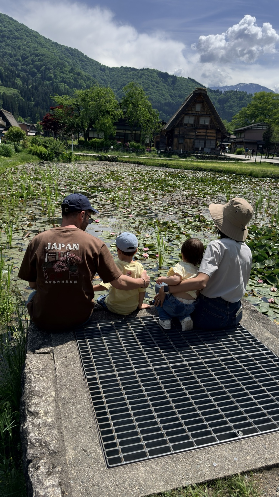
שירקאווה־גו · עם הילדים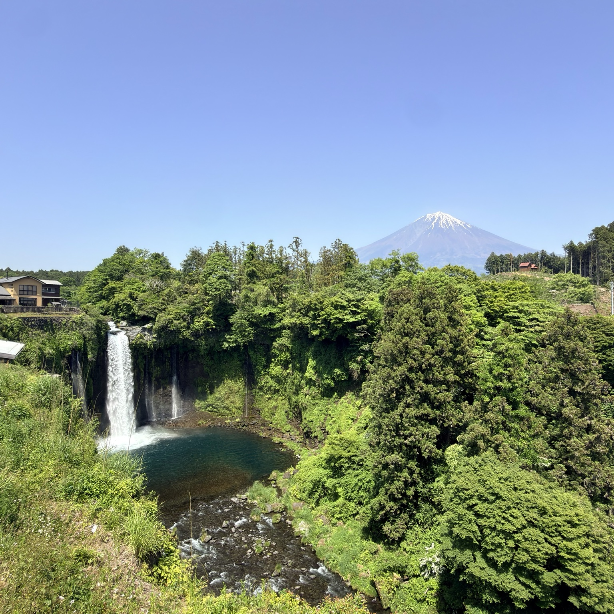
פוג׳י · בדרך שלנו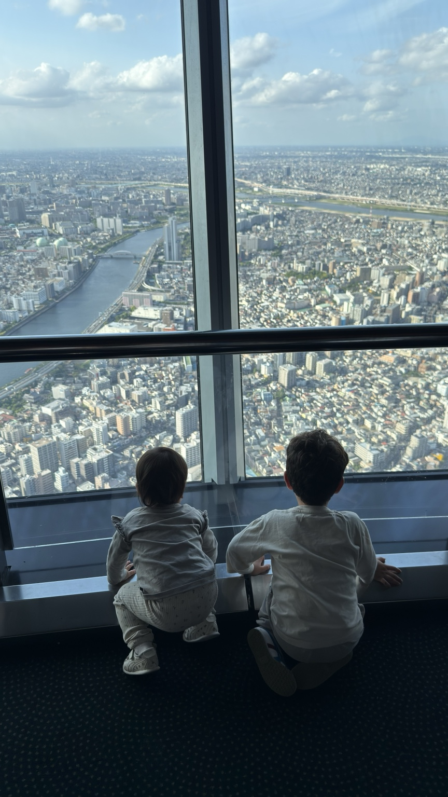
טוקיו · גם דרך העיניים שלהם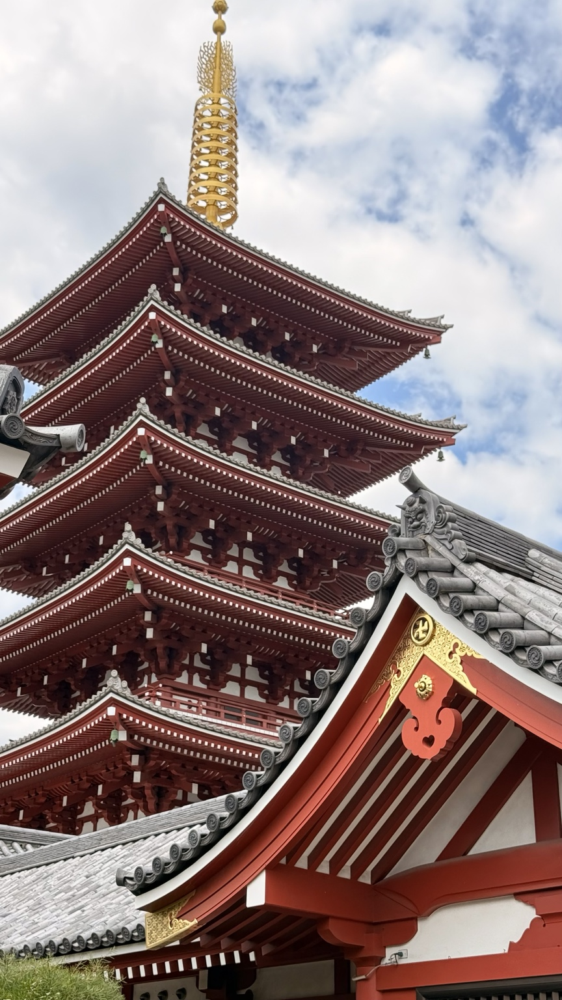
טוקיו · מסורת בתוך העירהמדריך בנוי כמו travel journal שימושי: יעד אחרי יעד, עם תמונות, מידע פרקטי, טיפים והמסלול שעשינו בפועל.

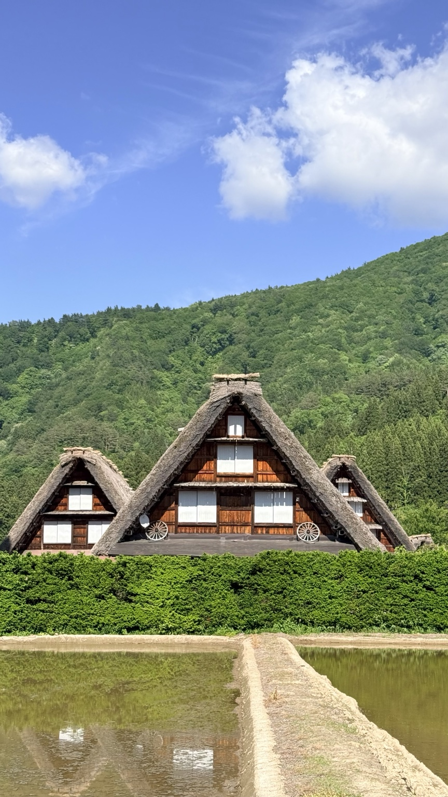
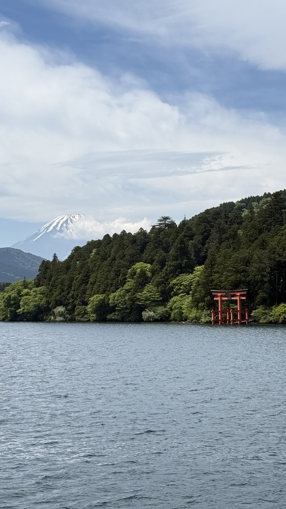
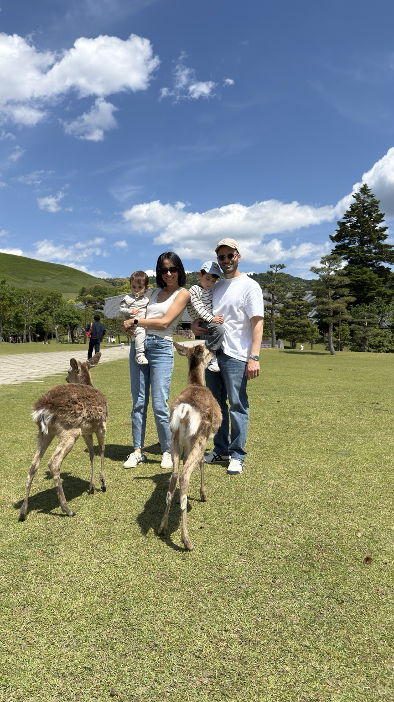
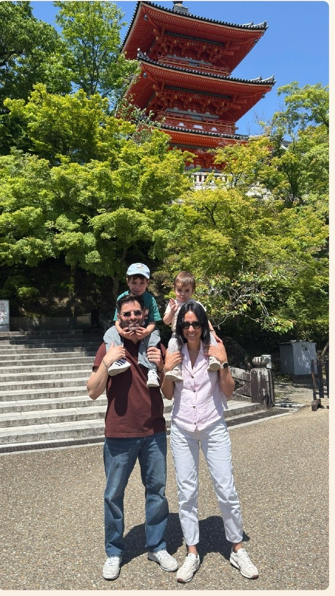
תכננו במשך חודשים, נסענו בעצמנו ורשמנו תוך כדי את הדברים הקטנים שלא תמיד מופיעים בחיפוש: מדרגות, עגלה, זמן אמיתי במקום, תורים, מעברים ומה הרגיש לנו שווה.
המטרה היא לא להגיד לכם איך חייבים לטייל ביפן. המטרה היא לחסוך את שלב ה״מאיפה בכלל מתחילים?״.
וזה בדיוק למה יש במדריך מידע שלא תמיד מוצאים במדריכים כלליים. לצד הדגש המשפחתי, המסלול, המלונות, הטבע, הערים, התחבורה והטיפים יכולים להיות שימושיים מאוד גם לזוגות ולמטיילים בלי ילדים.
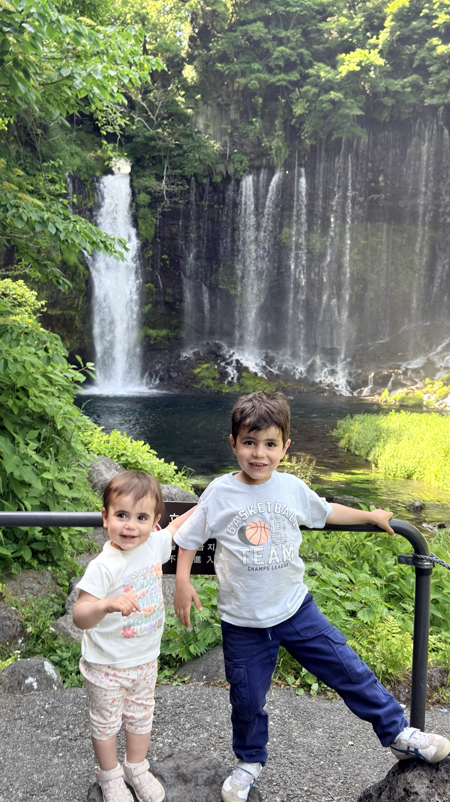
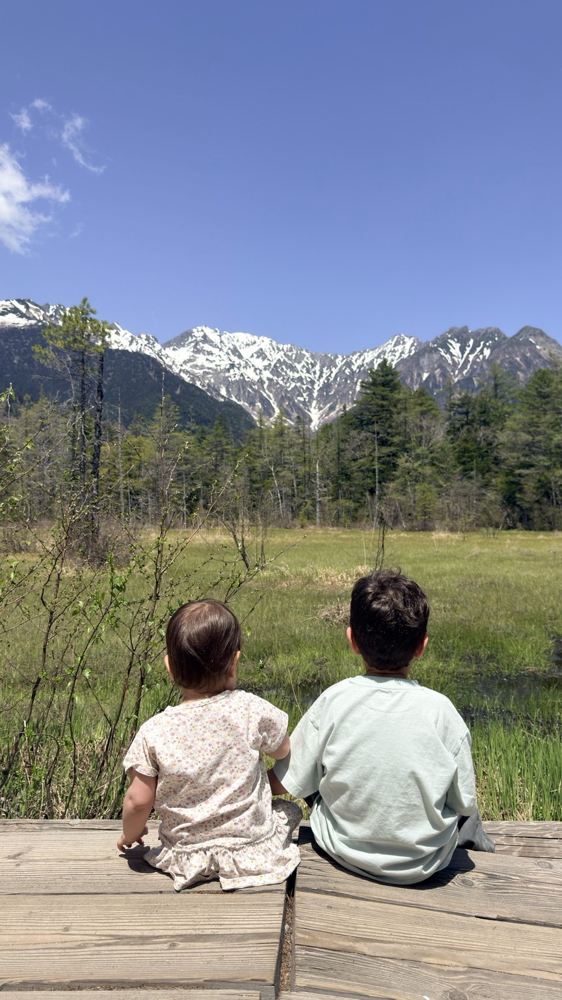
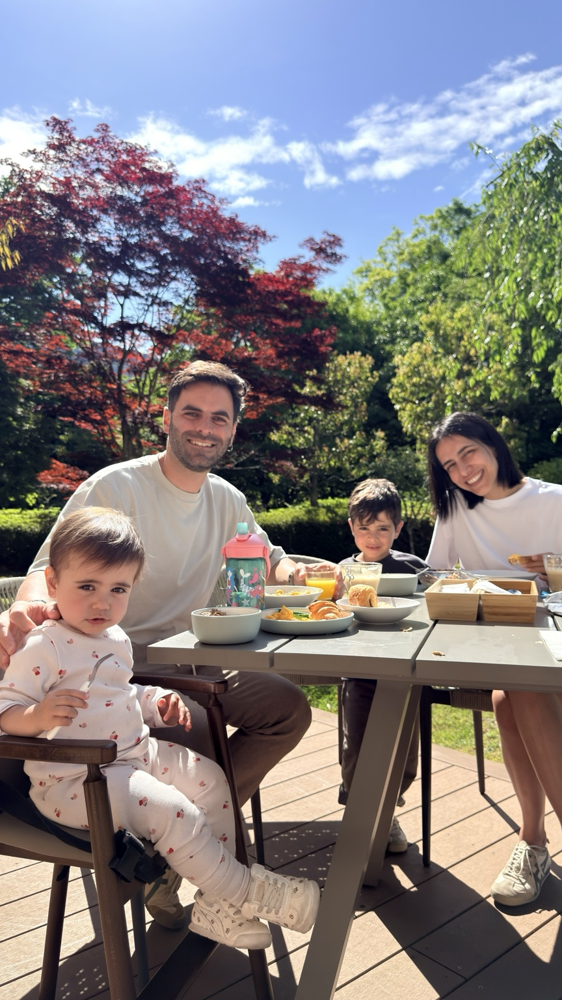
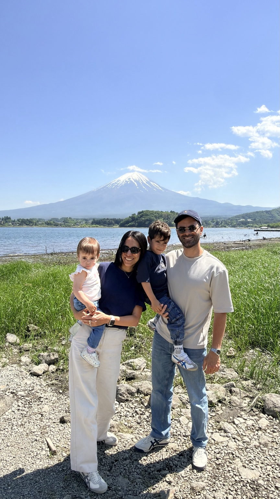
בעיקר למשפחות עם ילדים שמתכננות טיול עצמאי ליפן, וגם לזוגות ולמטיילים עצמאיים שרוצים נקודת פתיחה מסודרת. הוא מתאים במיוחד למי שנמצא בתחילת התכנון ורוצה להשתמש במסלול אמיתי ומפורט כרפרנס, ולא להתחיל מאפס.
המדריך מתמקד באוסקה, נארה, קיוטו, קנאזאווה, שיראקאווגו, טאקיאמה, קמיקוצ׳י, מאצומוטו, אזור פוג׳י, האקונה וטוקיו. אלה היעדים שחקרנו ושילבנו בטיול שלנו, והמדריך אינו מדריך אנציקלופדי לכל יפן.
כן. המדריך כולל קישורים ישירים למקומות ולאטרקציות לאורך המסלול.
לאחר קבלת התשלום יישלח אליכם לינק להורדת המדריך כקובץ PDF דיגיטלי. המדריך כולל קישורים לחיצים ל-Google Maps, אתרים ומקורות שימושיים, כך שאפשר לשמור אותו בטלפון, בטאבלט או במחשב ולהשתמש בו גם במהלך הטיול.
בהחלט. המדריך מבוסס על הטיול שלנו שנמשך 21 יום, אבל ממש לא חייבים לעשות את כולו. אפשר להשתמש בו כרפרנס, לבחור מתוכו את היעדים שמתאימים לכם ולבנות מסלול קצר יותר בהתאם לזמן, לקצב ולסגנון הטיול שלכם.
הטיול שלנו התקיים בחודש מאי, ולכן החוויות, התנאים וההמלצות במדריך מבוססים על התקופה הזו. עם זאת, רוב המסלול, היעדים והמידע במדריך רלוונטיים לאורך כל השנה ויכולים לשמש בסיס מצוין לתכנון בכל עונה - כמובן תוך התאמה למזג האוויר, לעונתיות ולתנאים הרלוונטיים למועד הטיול שלכם.
קחו את המסלול, הניסיון וההמלצות שלנו - והתאימו אותם ליפן שלכם.
לרכישת המדריך · 79 ₪